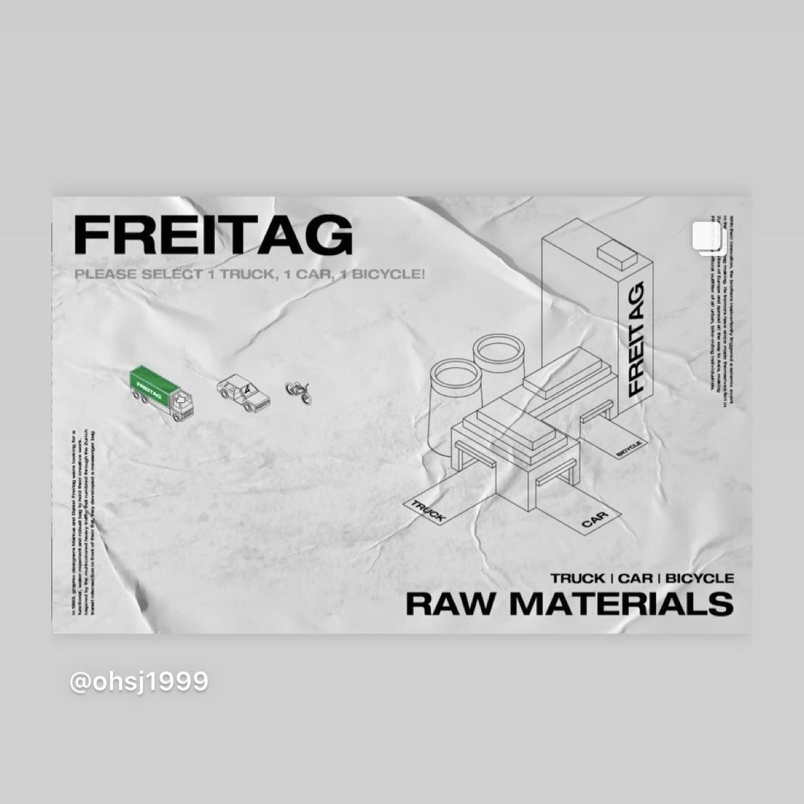
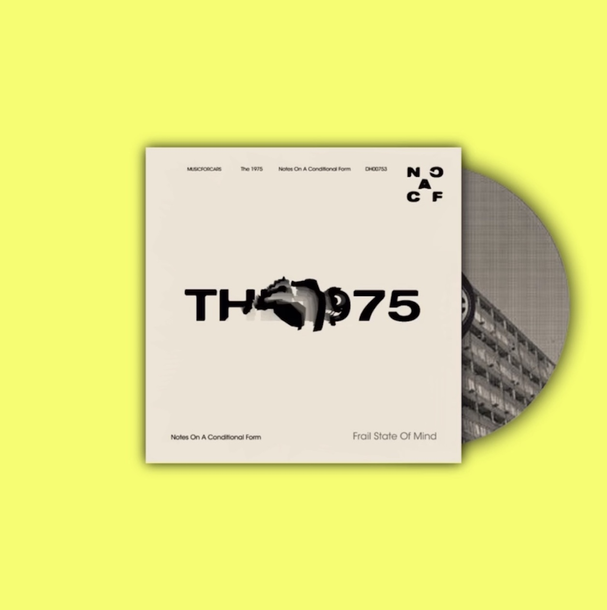
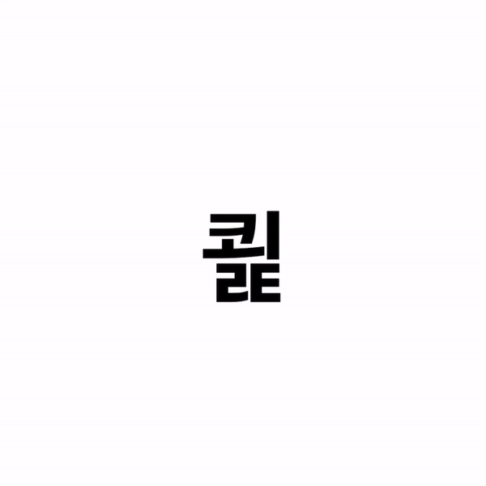
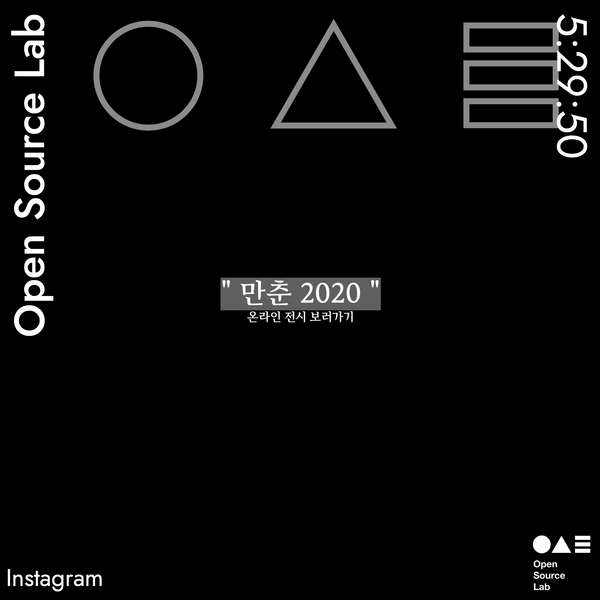
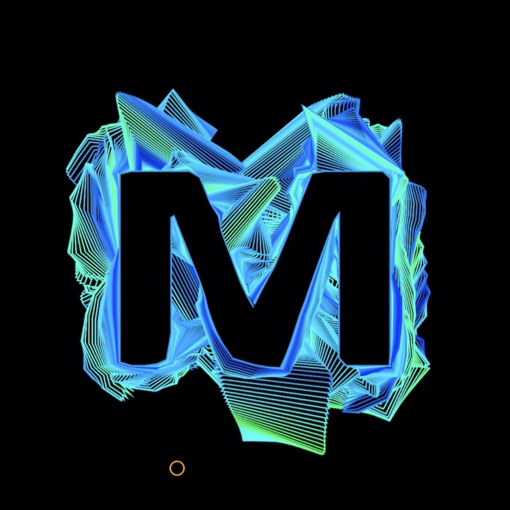

SEJIN OH
VISUAL PROGRAMMER | INTERACTION DESIGNER
MEDIA ART.
> 마음의 일었던 파동
Interactive Media Art.
Sound Interaction + Live Projection Mapping
> instagram_video
WEB DESIGN & DEVELOPE.
> FREITAG BRAND PROMOTION
Interactive Brand Promotion.
FREITAG | unique process of the freitag products.
Graphic Design + Programing by Processing + 3D Modeling
> instagram_video
> THE 1975 LIVE ALBUM WEBSITE
Live Album Cover Website.
THE 1975 | Frail State of my mind.
live typography artwork by p5.js
> DEMO WEBSITE
> HANGEUL MOBILE TYPOGRAPHY
Interactive Typography.
HANGEUL | Korean traditional Language.
live typography artwork by p5.js
> GO TO WEBSITE
> Open Source Lab page
Web Design + p5.js Develope.
Open Source Lab | Hongik univ. interactive media art crew
> Open Source Lab
VISUAL PROGRMMING.
> Data wave
Interactive Typography Experiment.
Mobile Acceleration Interaction by p5.js
> Mobile Typo
> Data wave

Interactive Motion Graphics.
inspired by Flowfield Algorithm
> Sine bpm

Generative Motion Graphics.
inspired by Sine Wave Algorithm